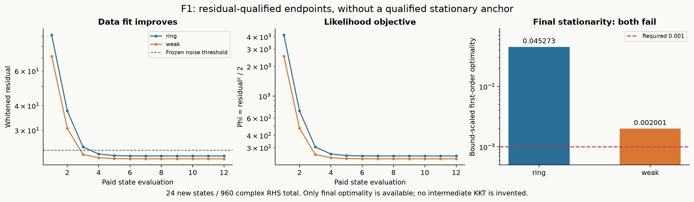

Research F · 实际材料与数值图
F0旧TRAIN数学点 / F1新条件反演分别展示。F2未运行，无传输、posterior样本或新模式图。
ring：初值、独立物理解、缓存N3与离线真值
 已知家族/全局几何，所有材料使用相同色标。物理残差通过，驻点资格未过。PDF
已知家族/全局几何，所有材料使用相同色标。物理残差通过，驻点资格未过。PDFweak：同一个parent，另一背景
 不能将两个背景算作两独立物体；N3 full-forward residual缺失。PDF
不能将两个背景算作两独立物体；N3 full-forward residual缺失。PDF实际12次forward序列与冻结驻点标准

ftol不是KKT；没有虚构中间梯度历史。PDF可消除坐标项与真实prior法向项
 阴影柱只有历史Maxwell norm，不是缺失向量；区间使用三角不等式，依赖历史norm。PDF
阴影柱只有历史Maxwell norm，不是缺失向量；区间使用三角不等式，依赖历史norm。PDF